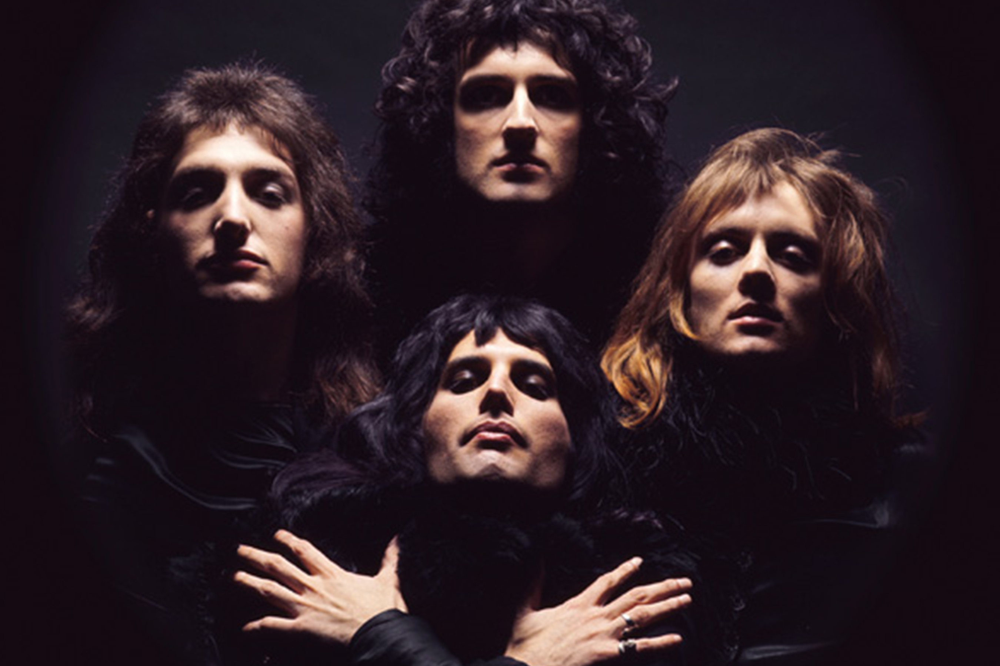

|
Galerie
Kontakt
Queen ist eine 1970 gegründete britische Rockband.
Ihre Besetzung mit Freddie Mercury, Brian May, Roger Taylor und John Deacon blieb
zwei Jahrzehnte lang unverändert.
Die Musik der Gruppe ist durch große stilistische Vielfalt gekennzeichnet, alle
Bandmitglieder waren wesentlich am Songwriting beteiligt.
Zu Queens bekanntesten Songs zählen
das von Freddie
Mercury komponierte We Are the Champions,Brian Mays We Will Rock
You sowie
The Show Must Go On, John Deacons Another One Bites the
Dust sowie I Want to Break Free und
Roger Taylors Radio Ga Ga sowie
A Kind of Magic. Die Mercury-Komposition Bohemian Rhapsody
belegte sowohl 1975 als auch 1991 viele Wochen lang die Spitze der
britischen Singlecharts. Für
diesen Titel, der Ballade und operettenhaft
überzeichnete Gesangskapriolen sowie Hardrock in
einem Song
vereint, produzierte die Band eines der frühesten und stilprägenden
Musikvideos.
Queen war kontinuierlich international erfolgreich: Sämtliche nach
ihrem Durchbruch im Jahr
1974 veröffentlichten Studioalben erreichten
Platz eins der Charts. Mit rund 200 Millionen
verkauften Alben ist
Queen eine der weltweit kommerziell erfolgreichsten Bands. In ihrer
Heimat Großbritannien wurde allein ihr erstes Greatest-Hits-Album
mehr als fünf Millionen Mal
verkauft, was dort bislang unübertroffen
ist. Mit mehr als 31 Millionen verkauften Exemplaren
zählt es auch zu
den weltweit meistverkauften Alben. Mit einem Verkauf von über
sieben
Millionen Einheiten ist Another One Bites the Dust die
meistverkaufte Single der Band. Queen
spielte in 16 Jahren mehr als
700 Konzerte.
|

|